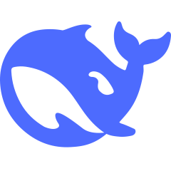

Click Clawd to switch between Claude, Codex, Antigravity, DeepSeek and opencode-go.
Click the percentage to open or close. Swipe, scroll sideways or use the dots for the second page. This island runs on sample numbers.
Claude Notch
Your AI usage limits, live beside your Mac's camera. Reset countdowns, today's spend and your running sessions are one click away. Click elsewhere and the island tucks back into the notch.
The island at the top of this page works like the app. Tap it, and tap the crab to switch provider. Numbers are samples.
Free and MIT licensed. macOS 14 or later on Apple Silicon or Intel. Signed and notarized.
The real app, on a real notch
Collapsed, it's Clawd and your session percentage on either side of the camera. Open, it's a two-page card you can swipe through. There's no Dock icon and nothing in your menu bar.
Every page of the island


Five providers, one island
Only providers installed on your Mac appear. Click the icon on the left of the island to cycle through them, or let it rotate every 10 seconds, 30 seconds or minute.
| Provider | What you see | Where it comes from |
|---|---|---|
| Claude | 5-hour, 7-day and Fable weekly limits, credits, today's cost with a projection for tonight, named sessions, all-time projects | Claude Desktop, a browser signed in to claude.ai, or the Claude Code CLI login. Cost and tokens from your local ~/.claude logs. |
 Codex |
Rate-limit windows, token totals, credits, plan, recent tasks, 7-day token chart | The official local codex app-server. Session logs aren't parsed. |
 Antigravity Antigravity |
Quota windows, tokens, models, projects, week chart | The agy CLI's read-only /usage command, which spends no quota, plus token counts from its local stores. |
 DeepSeek |
Balance, peak or off-peak pricing right now, spend today and this week | Your DeepSeek API key. Spend is observed from the balance going down, and labelled that way. |
 opencode-go |
5-hour, weekly and monthly meters, renewals, Zen balance, sessions | Your opencode.ai browser session, with local history as the fallback. |
Local-first, and clear about what's local
Limits come from the provider
The limit bars use the same endpoint the official apps do, so they count everything: desktop, terminal, cloud and remote sessions.
Spend and tokens are counted on your Mac
Cost and token figures come from your local logs and are marked local. Work done in the cloud counts toward your limits but not toward the local dollar figure.
- Talks only to each provider's own service. No analytics, no servers of its own.
- Never reads prompts, transcripts or artifacts. Only token counts and project folder names.
- Reads the Claude Code CLI login without refreshing it, so your terminal session stays as it was.
- Asks through the standard macOS Keychain prompt before reading anything stored there.
Read the provider architecture for every data source and security boundary.
Small things it gets right
- Clawd keeps pace
- The crab walks faster as you near a limit and stops when you're out. Prefer a mono crab or the Claude spark? Pick one from the Icon menu.
- Out of the way in full screen
- Turn on Hide in full screen and the island tucks into the notch while a film or game owns the display.
- A notch on every Mac
- No notch? It draws its own at the top of the screen.
- DeepSeek's clock
- A dot shows whether you're paying peak or off-peak rates right now, Chinese public holidays included.
- Spend before it happens
- Today's Claude cost comes with a projection for tonight, so you can pace yourself.
- Keeps itself current
- Updates arrive automatically. Check for one any time from the right-click menu.
Install it in a minute
- Download
Claude Notch.zipfrom the latest release, unzip it and drag the app to Applications. - Open it. It's notarized, so there's no security warning. When the Keychain prompt appears, choose Always Allow.
- Keep it around. Right-click the island and choose Launch at Login.
Build from source
You'll need a signed-in Claude, Codex, Antigravity, DeepSeek or opencode-go account, and the full Xcode toolchain for the SwiftUI macros.
git clone https://github.com/stevemcqueenz/claude-notch-tracker
cd claude-notch-tracker
swift run ClaudeNotch # run it
bash scripts/make-app.sh # build the .app and a zip